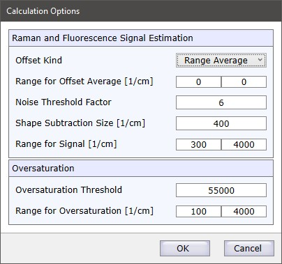

|
光谱属性
|
此对话框计算所有选定颗粒的拉曼和荧光信号量的估计值以及关于过饱和的是否信息。

拉曼和荧光信号估计
偏移类型
在计算任何信号值之前，从光谱中减去水平偏移：
偏移平均范围 / 用户定义偏移
根据所选的偏移类型，您可以定义一个范围来计算用作偏移的平均值，或直接输入偏移值。
噪声阈值因子
此因子定义光谱信号必须比局部噪声高出多少才能被检测为拉曼信号。拉曼信号值由高于<噪声阈值因子> * <局部噪声>的所有光谱像素确定。
形状扣除大小
定义 形状背景扣除 的形状大小。荧光信号值由扣除的背景确定。
信号范围
定义用于信号估计的光谱范围。
过饱和
过饱和阈值
如果定义范围内的任何光谱像素值高于阈值，则光谱被标记为过饱和。
过饱和范围
定义用于过饱和计算的光谱范围。瑞利峰可能饱和，因此您可以例如跳过瑞利区域。